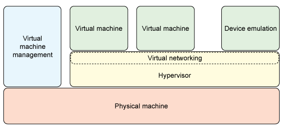
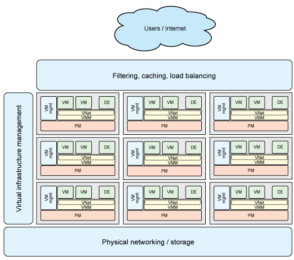
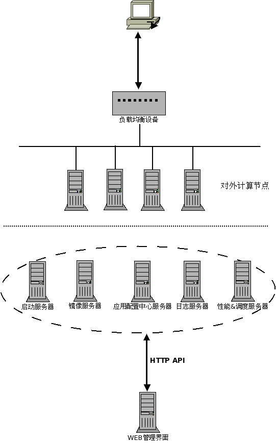
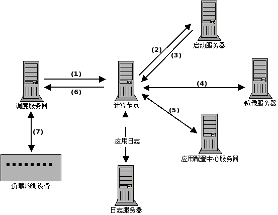
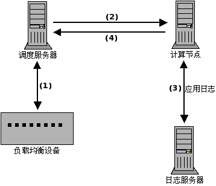
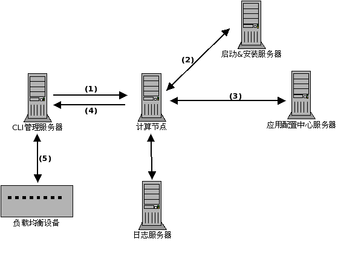

无状态计算节点原理与实现方案
Author :Hunter Fu<hunterfu2009@gmail.com>
最后更新时间: 2010-05-07 11:10
- 无状态计算节点概述
- 无状态计算节点架构
- 后台支撑服务器
- 计算节点从启动到对外服务过程
- 目前可借鉴的开源项目
- 无状态计算节点功能的分阶段实现
象自来水一般提供即需即用的计算力服务是IT行业从产品向服务升级的重要标志，计算资源、存储资源、网络资源正在虚拟化技术的帮助下整合为逻辑运算资源池.
虚拟机在不断提升硬件利用率的同时正在成为绿色、可移植、即插即用的新型计算力单位。
为了加快应用的部署，增强应用的抗压力和良好的扩展，我们需要通过虚拟化来实现无状态计算节点.
下面我们就来说下 无状态计算节点的原理和实现方法
1. 无状态计算节点概述

- 所谓的无状态计算节点,通过虚拟化的方式运行的一个操作系统，就是一个独立的计算资源，不存在任何应用相关的东西，只有当我们部署了特定的应用配置后，这个计算节点才会成为某种应用的服务节点之一。
- 无状态节点,可以被任何节点所替代或者备份.
- 无状态节点也可以动态的迁移或者在线维护(比如维修等情况)
2. 无状态计算节点架构

上图: 总体框架图

上图 : 简化细分图
- 前端 : 负载均衡和计算节点构成,接受用户的请求。
- 后端 : 计算节点所依赖的后台服务,启动服务器,镜像服务器,应用配置中心服务器，日志服务器,性能和调度服务器
- 管理 : 所有的后台服务器都需要通过web统一化管理和配置,所有的后台服务器和管理服务器都通过 http api的方式进行通信
3. 后台支撑服务器
这里我们分别来看看每种后台支撑服务器(按照逻辑功能来划分)的功能和所服务的阶段.
3.1. 启动服务器
- 启动服务器(Bootp):主要负责提供客户端节点PXE网络启动,提供各种操作系统版本的启动微内核镜像
- 启动服务器服务构成 : DHCPD + TFTP 服务,组成PXE启动环境
- 所有计算节点都是通过PXE启动,第一个访问的就是 启动服务器
目前我们对启动服务器的工作已经很完善，唯一要维护的就是启动镜像内核.
3.2. 镜像服务器
- 存放各种操作系统版本的完整镜像,镜像可以通过NFS,ISCSI,LVM,HTTP等方式输出，使无状态计算节点 可以挂载和使用.
- 镜像是不存在任何和应用相关的配置信息，是一个安装好的裸操作系统文件的集合,方便计算节点的快速部署
3.3. 应用配置中心服务器
- 存放所有版本的应用程序,包括应用程序运行环境包(apache,jboss等),应用程序程序包(jar,war包)
- 存放应用程序依赖的系统配置文件,包含网络配置文件，系统各种状态参数的设定配置等
- 每一种应用都通过模板化配置,确定应用运行所需的条件(比如 环境,jar包，系统配置参数等)
- 上述提到的配置，模板都需要版本控制管理,可以考虑使用 版本控制工具,比如 svn等
3.4. 日志服务器
- 日志服务器使用syslog-ng作为服务端，收集计算节点发送过来的日志
- 计算节点上运行的应用程序日志发送到日志服务器，本地尽可能不保存日志数据，减低IO读写
- 日志服务器根据不同的标记，可以分类处理和保存
3.5. 性能和调度服务器
- 调度服务器需要管理备用资源池，管理备用物理服务器,管理宿主机上的虚拟计算节点.
- 所有计算节点的性能数据监控,根据当前应用容量，确定增加和减少计算节点的策略.(通过dragoon命令行接口实现性能监控)
- 根据性能数据，调度服务器来调度计算节点(加减).
- 调度服务器调用均衡接口脚本，将计算节点自动加入到负载均衡设备中对应应用VIP中.
- 对需要设置备份需要的计算节点，调度服务器能够保证节点可用的情况下，使用备用池中的计算节点替代上去.
3.6. 统一的管理方式
- 以上各种功能服务器，都需要通过统一的UI进行集中式的管理
- 各种功能服务器状态和功能信息都能统一查看
- 通过命令行(CLI)方式实现,对所有功能服务器的管理
- web化方式管理可以放在Armory中进行开发
4. 计算节点从启动到对外服务过程
前面已经叙述了各个后台功能服务器的作用，下面我们来看看一个新的计算节点上下线的过程.
4.1. 计算节点上线过程

上图上线流程说明如下:
- 调度服务器 通知计算节点启动.
- 计算节点网络启动，向启动服务器请微内核文件.
- 计算节点通过TFTP下载内核启动文件并且执行内核启动系统
- 计算节点微内核启动后，通过NFS/ISCSI等方式挂载操作系统镜像文件(只读),启动进入正常的无盘操作系统
- 计算节点进入操作系统后，根据系统配置的参数(比如/proc/cmdline),从应用配置中心服务器下载应用程序相关的环境软件包和系统配置文件包，安装并更新系统配置.
- 计算节点启动应用程序，通过相应检查(比如通过脚本检查)，确认应用部署启动成功，通知调度服务器，可以投入使用.
- 调度服务器 将计算节点加入到负载均衡设备中，计算节点对外服务，上线完成
4.2. 计算节点下线过程

上图下线流程说明如下:
- 调度服务器判断应用容量符合策略后,将计算节点从负载均衡设备中Disable,并删除.
- 调度服务器通知计算节点关机.
- 计算节点确认应用没有任何连接后，关闭应用，将必要的数据发送到日志服务器后.
- 计算节点通知 调度服务器，并关机,下线完成.
4.3. 无状态计算节点依赖的基础点
上述谈到的无状态计算节点,总体来说是我们现有技术是完全可以实现的，但是要依赖于以下几个基础工作点
- 应用程序必须标准化部署，应用环境和应用依赖的系统配置关系必须清除，并且模板化
- 操作系统镜像最好要做精简化，尽可能加快操作系统的启动和部署应用时间，加快应用快速部署时间
- 目前dragoon监控系统要能提供良好的命令行接口程序，方便采集计算节点的性能状态数据，供调度程序使用
- 要有完善的负载均衡设备操作脚本，通过脚本要屏蔽设备的差异化,方便调度程序使用
- 最核心的是调度程序，能够根据不同的策略来实现计算节点的加减.
当然以上只是个人目前想到的，可能还有其他基础点没有考虑到，请大家集思广益，完善.
5. 目前可借鉴的开源项目
目前，在开源项目方面，也有很多用来实现我们现在类似的需求和功能的软件,现列举几个，供大家参考
- openQRM [http://sourceforge.net/projects/openqrm]
是目前业内领先的开源系统管理解决方案，用来管理企业数据中心业务，同时包括虚拟环境管理、数据中心自动化.
openQRM提供开放的插件管理架构，你可用很轻松的将现有的数据中心应用程序集成到其中，比如Nagios和VMware.
openQRM的自动化数据中心操作不但可用帮助你提高可用性，同时还可以降低您企业级数据中心的管理费用。
- abiCloud [http://abicloud.org/display/Community/Home]
开源的云计算平台——“abiCloud”，使公司能够以快速、简单和可扩展的方式创建和管理大型、复杂的IT基础设施(包括虚拟服务器，网络，应用，存储设备等等)
AbiCloud较之同类其他产品的一个主要的区别在于其强大的Web界面管理。你可以通过拖拽一个虚拟机来部署一个新的服务
这个版本允许通过VirtualBox部署实例，它还支持VMware，KVM和Xen.
- Eucalyptus [http://open.eucalyptus.com]
Eucalyptus 是一种开源的软件基础结构，用来通过计算集群或工作站群实现弹性的、实用的云计算
它最初是美国加利福尼亚大学 Santa Barbara 计算机科学学院的一个研究项目，现在已经商业化，发展成为了 Eucalyptus Systems Inc。
不过，Eucalyptus 仍然按开源项目那样维护和开发,Eucalyptus Systems 还在基于开源的 Eucalyptus 构建额外的产品；它还提供支持服务
个人推荐大家看看 openQRM 和 abiCloud 这2个项目
题外话:我们都说不要重复造轮子，但是使用开源项目后，总是要进行二次开发改进才能适用我们目前的环境，这就需要我们有这方面的开发能力，要么能找到开发资源.
而且开源项目使用的开发语言也不尽相同，对团队也是有技术要求的，所以自己从头作还是借鉴和二次开发，也很难抉择，不知道大家怎么想??
6. 无状态计算节点功能的分阶段实现
上述描绘了我们实现无状态计算功能总体功能的整体架构，但是很多细节和环节都没有提到，为了能够达到我们的目标，必须分阶段实现功能，充分考虑当前阶段的细节和环节，这样在实施上更容易。
6.1. 第一阶段： 目标和工作点概述
6.1.1. 本阶段目标要点风险等
- 本阶段目标: 实现应用的快速部署,应用模板的建立
- 本阶段的具体工作和基础点
- 应用标准化的工作，整理出应用模板（应用所依赖其他环境的所有关系，比如 操作系统版本，应用环境，系统配置文件包等)
- 装机系统改进,可以根据应用程序标准模板,自动进行操作系统的配置变更
- 实现命令行(CLI)方式的简化配置管理中心，方便维护应用模板(各种依赖关系),管理待分配的计算节点资源(物理计算节点和虚拟计算节点)
- 实现负载均衡设备的 增加，删除 Member的功能，提供手工方式的上线和下线功能，实现快速部署和对外服务
- 计算节点上下线对应的检查脚本，确认服务处于正常状态.(比如上下线都要通知发布程序,加入或者删除此计算节点)
- 本阶段的风险分析
- 操作系统和应用部署的方式和现有方式基本没有差别，只是在安装完成操作系统后，根据应用模板配置，将相应依赖的组件安装完成.
- 应用相关的配置文件，程序包等放在应用配置服务器上，可以通过线性扩展来降低风险
- 上下线服务器或者计算节点都是通过手工来操作，只是变成一键或者二键完成
综上所述: 此阶段的风险和目前模式风险基本持平.
6.1.2. 本阶段部署方式

上图上线流程说明如下:
- CLI管理服务器，通知空闲计算资源，使用应用模板进行系统部署
- 空闲计算节点收到通知后，微系统开始根据应用模板,安装操作系统，完成后重启系统
- 计算节点进入操作系统后，根据应用模板,从应用配置中心服务器下载应用程序相关的环境软件包和系统配置文件包，安装并更新系统配置.
- 计算节点启动应用程序，通过相应检查(比如通过脚本检查)，确认应用部署启动成功，通知CLI管理服务器，可以投入使用对外服务.
- CLI管理服务器，收到计算节点确认后，执行命令将此计算节点，加入到负载均衡设备中，计算节点对外服务，上线完成
- 注意:
- 计算节点默认启动在微系统状态，作为空闲资源，可以随时分配使用
- 操作系统和应用还是部署在硬盘上，所以可以使用集中日志服务器也可以不使用，和目前的模式一致
- 管理服务器功能通过全命令行编写完成，通过良好的Getopt方式,实现cli的易用性
6.1.3. 本阶段基本完成时间
目前来说，应在在6月底完成，实现SA自己管理的 图片服务器 实现快速部署